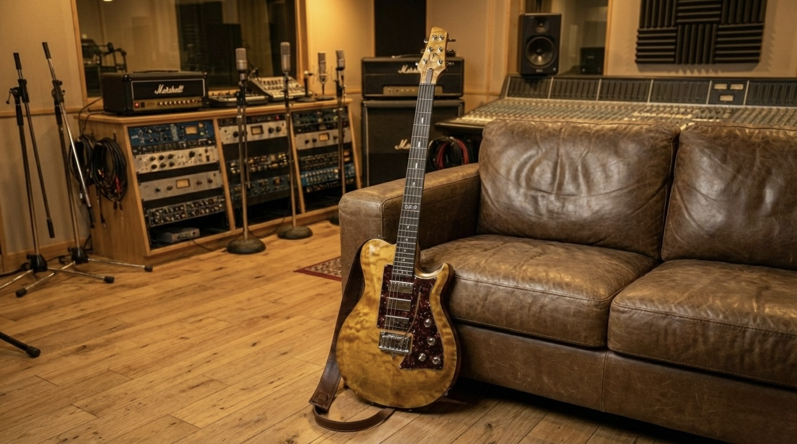
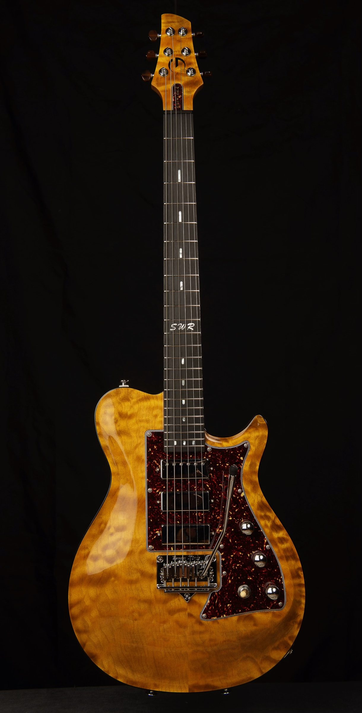
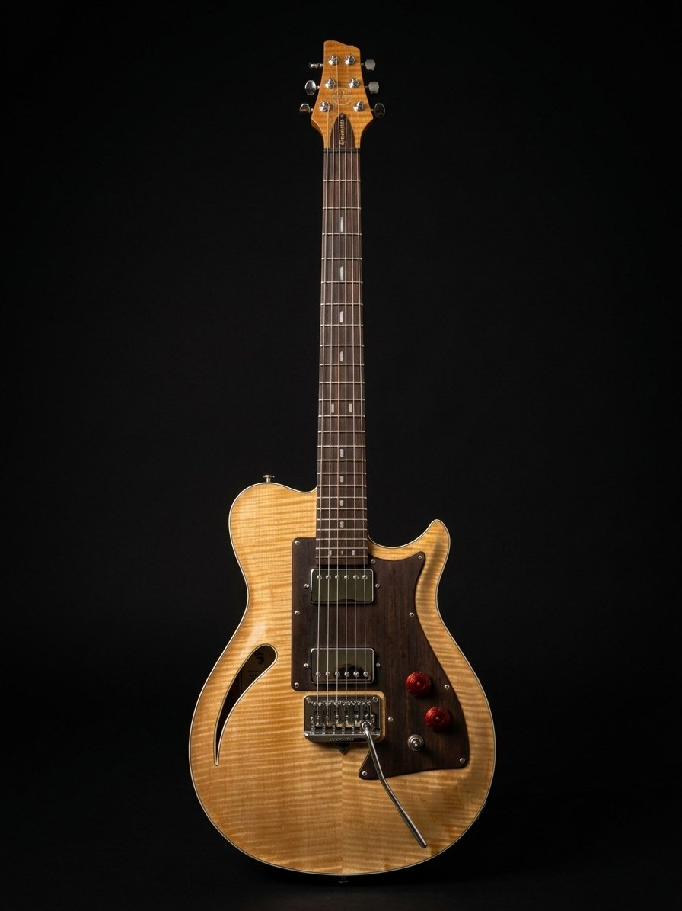
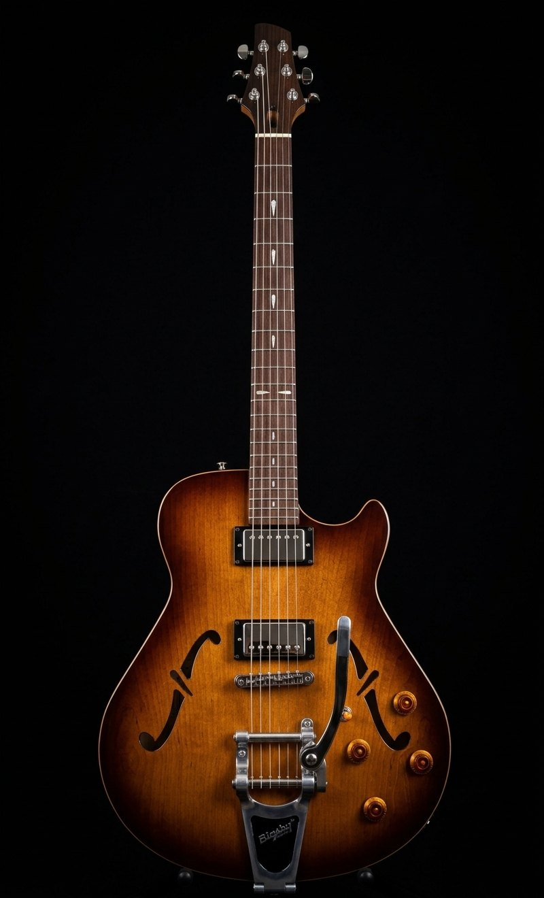

Nothing between you and the note. Total connection.

A solid body and two semi-hollows — each answering a different question.

Solid body and built to go from a whisper to full drive without losing its footing — the guitar Greylock began with.
Learn More →
Semi-hollow, light in the hands, and as capable as its namesake — built for the player who moves between styles inside a single set.
Learn More →
A 16" semi-hollow archtop with a woody attack and sustain that blooms — built for the player who wants the guitar to breathe.
Learn More →Built to order
Each model is a starting point for a conversation about what you actually need: a Saddleback with a torrefied ash top, a Goshawk voiced for how you dig in, or a Bascom built around the way your hands move between chords and lead.
Start the conversationA Greylock is built so your music can move as naturally as thought. Modern CAD/CAM engineering delivers the precision. Hand-shaping, hand-fitting, and hand-finishing give each instrument its character. The result is a guitar that feels right the first time you pick it up — and only more so, the longer you play it.
Read our philosophy →Modern CNC accuracy paired with traditional hand-carving.
Tonewoods selected individually for weight, stability, and voice — traditional or not, when a material earns its place.